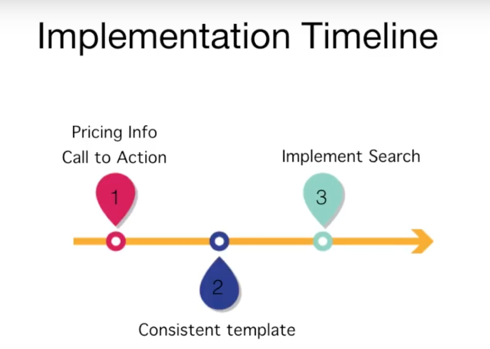

UX Research Consulting at Smithy
When a client comes you for consulting, it becomes straightforward to sway into jumping to methods, design solutions or conclusions. But doing UX research consulting is much more than just presenting reports or recommendations. That’s what I learned when I was working with Smithy (previously Detroit Machine Tools) while working with them and solving their problems. Nevertheless, my team and I did end up giving recommendations and reports to our client, but it was essential to assess the situation before starting anything else.
Objective
When it came to structuring our UX project, we initially had to think about where they are in their current stage of the product lifecycle and organizational maturity. On conducting stakeholder interviews, we found that the organization Smithy, was in the beginning stage of the UX process and the priority of the client was to increase the conversion rate of Machine tool buyers. By conversation rate, client meant converting the number of website visits to calls for Smithy's CNC products since that was the primary mode of communication with sales and support team.
Talking about the Smithy, the website provides information, images, and video tutorials on the machines, as well as support for the customers. DMT also has an online payment system for the lower priced items and financing options for the higher priced ones.
Hypothesis
After stakeholder meetings, we started brainstorming hypothesis and questions to be answered based on organizational priorities. The fundamental questions we came up with were -
- Who are our primary users? What are their goals for buying that product?
- How are people currently buying our machine products? How much of the buying happens online vs. offline?
- What do they expect to find and to be able to do on companies’ websites? What are industry standards?
- What problems do they face from beginning till the end of the process while looking at Smithy's products?
Methods
Since our client needed “overall improvement” to the website, we divided our research into two phases - Exploratory study and Usability Research which answered the questions related to user’s needs, preferences and industry standards. Usability research focussed on the evaluation of interface itself.
Conducting Research and Findings
Interiews
We interviewed seven people - two stakeholders, five customers- to determine how people are currently buying machining products. We found that customers were cost conscious, and considered second opinions and advice before making a purchase. They tend to appreciate tutorial videos and take seriously the conventional wisdom of online communities, which were very influential.
Surveys
We posted the survey on various online forums and groups and sent the survey to DMT’s customers and an engineering community, hoping to reach CNC and institutional buyers who were not present in our previous interview study. We offered to raffle off a $10 Amazon gift card to those who completed the survey. Overall we received 49 responses, of which eight we discarded, making for a total of 41, including reactions from CNC and institutional buyers. This survey found that users most valued pricing information, customer testimonials, and customizability when they visit a website like DMT.
Competitive Analysis
We decided to have a combination of four different comparators(direct competitors, partial competitors, indirect competitors and analogous competitors). Next, we selected ten comparisons within these four categories. Then, we included five dimensions in the criteria for comparing products.

Usability Tests
From the data logs of the usability tests, we found specific critical issues with the site that we feel are significantly detrimental to the user experience of the website:
- Machining Tools” section is not standardized and is not well organized
- Pricing information is not readily accessible
- Search is not discoverable and not useful enough
- Shipping information is not precise.
- It is difficult to compare products
Our tasks comprised of the following sceanrios:
- Tasks involving choosing machine tools of their choice by doing general website exploration
- Tasks involving comparison of products with given dimensions
- Tasks involving buying a specific product (given specs and payment details) for a scenario

User doing a task
Heuristic Evaluation
We established the ten heuristics that we planned on using: feedback, metaphor, navigation, consistency & standards, prevention, memory, efficiency, help, recovery, and design. From these, we established general questions of user takeaways that we wanted to evaluate. We found certain key issues with the site that we felt were significantly detrimental to the site:
- The user does not know how far or deep they are on the site at any given point
- The main task flow of the site, adding items to the shopping cart and checking out, was inconsistent with web standards and user expectations.
- Links aren’t labeled properly
Our Recommendation
From each of our research methods, we identified key problems and came up with key recommendations. But we couldn’t just throw some suggestions at our client. We carefully assessed budget, timeline, and complexity of our recommendations and eventually recommended them. We synthesized our findings and recommendations in the form of a 9min video. It laid our process, methods, findings, and recommendations. For more details see the video below.
Our team discussion priorities for the implementation timeline
Next Steps
By giving the client benefit of focusing on the most urgent tasks which can be implemented within a short time frame, we provided them with an implementation timeline. Since the organization didn’t have any established UX team or development team (only consultants), we thought it would be a good idea to focus on “Where do we go from here?…”
